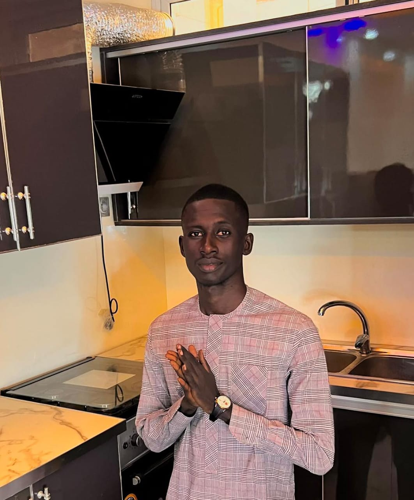

Étudiant en L3 Génie Logiciel à l'UIDT · Passionné par l'IA & la Data · À la recherche d'un Master
Étudiant en Licence 3 Génie logiciel à l'Université Iba Der Thiam de Thiès (UIDT), je conçois et développe des applications web full-stack, de l'enquête de terrain et de la modélisation UML jusqu'à la mise en œuvre, en équipe sous Git.
Attiré par l'intelligence artificielle et l'exploitation des données, je candidate en Master pour consolider mes bases en ingénierie logicielle et me spécialiser dans ces domaines.
Niveaux indicatifs basés sur ma pratique et mes projets réalisés.
Cliquez sur une carte pour découvrir les détails, captures d'écran et technologies.
Vous avez un projet, une opportunité de stage ou souhaitez simplement échanger ? N'hésitez pas à me contacter — je réponds rapidement.